📝 下書き 91本
2026年10月1日時点。ここは、まだ本番に出していない記事の置き場です（英語と日本語だけ）。
完成の形を見ながら直して、「本番に出して」で公開します。検索には出ません。
🎯 1000本まで：公開 179 ＋ 下書き 91 ＝ 270本
公開 179下書き 91あと 730本
このブログの「憲法」を決めました
I made a "constitution" for this blog
派遣社員は、怒られる道も、意見を言う道も2本ある
As a temp worker, there are 2 roads to get scolded, and 2 roads to speak up
派遣社員は、3か月ごとにちょっとドキドキする
As a temp worker, my heart races a little every 3 months
新人に教えていて気づいた、この1年で覚えたWindowsのショートカット
Teaching a new person, I noticed the Windows shortcuts I learned this year
今の日本の大企業、すごいと思ったこと
Something that impressed me about big Japanese companies today
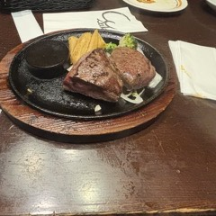
職場の人に、お別れ会を開いてもらった
My team held a farewell party for me
JUMP ONEで、曲のカードをもらった。曲はほぼ2000年代だった
I got a music card at JUMP ONE, and the songs were mostly from the 2000s
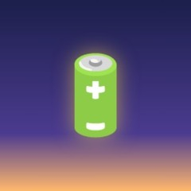
夜勤の体力は、朝7時をすぎると回復する
On night shifts, my energy comes back after 7 AM
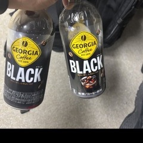
夜勤の日はコーヒー1.5リットル、体がぶるぶるする
On night shifts I drink 1.5 liters of coffee, and my body starts to shake
落ち込んだときは、ドラマ1本より、ミュージックビデオ1本
When I feel down, one music video works better than one drama
音楽アプリは、2つ課金してもいいと思う！
I think it is OK to pay for 2 music apps!
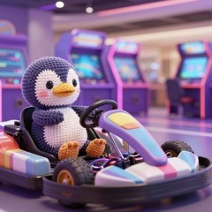
SMクラークのゲームセンターで、マリオカートを発見！
I found Mario Kart at the arcade in SM Clark
ソウルのDDPは、真っ白な惑星みたいだった
DDP in Seoul felt like a pure white planet
バギオでは、いちばん厳しい学校を選んだ
In Baguio, I chose the strictest school
大学見学2日目：Sunway College
University visit, day 2: Sunway College
24歳から、運気が上がるらしい
My luck seems to go up from age 24
思っていることを書き出すのが、一番いい
Writing down what I think is the best
英語とITを、一緒に学ぶにはどうしたらいい？
How can I learn English and IT at the same time?
人の言うことを、否定できない
I cannot disagree with what people say
Udemyが、新しい趣味かもしれない
Udemy might be my new hobby
フィリピンで好きになった歌「Palagi」
The one Filipino song I still keep listening to: "Palagi"
2026年、私の好きな外国人ランキング
My ranking of favorite foreigners in 2026
オリバー・バークマンのブログが大好き。本に17,000円払った
I love Oliver Burkeman's blog, and I have paid 17,000 yen for his books
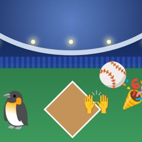
ホームランのあと、名古屋ドームが沸いた
After a home run, Nagoya Dome erupted with excitement
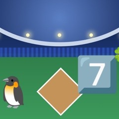
日本の野球では、7回を「ラッキーセブン」と呼ぶ
In Japanese baseball, the 7th inning is called the "Lucky Seven"
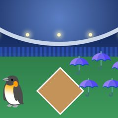
名古屋ドームで、東京ヤクルトスワローズのファンが傘を上げていた
At Nagoya Dome, Tokyo Yakult Swallows fans raised their umbrellas
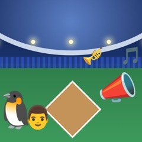
父と行った名古屋ドームで、中日ドラゴンズのチャンステーマを撮った
At Nagoya Dome with my dad, I filmed the Chunichi Dragons' chance theme
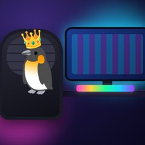
韓国のPCカフェは、CEOが座るような席だった
A Korean PC cafe had seats like a CEO chair
日勤と夜勤の二交代制で働くと、毎月8連休がある！
If you work two shifts, day and night, you get 8 days off in a row every month!
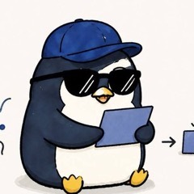
書いている本人から、日本語で読んでくれている人へ一言
A message from the owner to people reading in Japanese
仕事で難しい資料を読むコツ②：ちゃんと左から読む
Another tip for difficult documents at work: read each sentence from the left
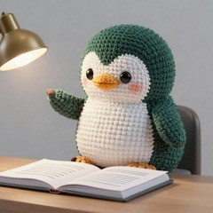
仕事で難しい資料を読むコツ：目次だけを読む
A tip for difficult documents at work: read only the table of contents
日本人がひとりだけの私を、社長は気にかけてくれた
The boss worried about me being the only Japanese person there
あそこで作った料理でいちばんおいしかったのは、キャベツと黒こしょうだった
Cabbage with black pepper was the best thing I cooked out there
クラーク空港には毎週行っていたので、はっきり覚えている
I went to Clark airport every week, so I remember it clearly
生徒が持ってきてくれた手紙やお土産が、うれしかった
The letters and gifts students brought me made me happy
立って仕事をしていたら、話しかけられるようになった
I worked standing up, and people started talking to me
空港での生徒のお迎えは、暑さとの綱引きだった
Picking students up at the airport was a tug of war with the heat
初日にオーナーから「お前の仕事はエージェントと友達になることだ」と言われた
On my first day the owner said my job was to become friends with the agents
祝日が続いたせいで土曜出社になり、みんなで手で食べるごはんを囲んだ
A run of holidays meant a Saturday shift, and a table of food we all ate with our hands
フィリピンでは、人前で叱ることはタブー
In the Philippines, scolding someone in front of others is a taboo
議事録を1分で作ったら、周りに驚かれた
People were surprised when I made the meeting minutes in 1 minute
ブリッジSEをしていて、いちばん嬉しかった3つの瞬間
The 3 moments that made me happiest as a bridge engineer
日本人が自分ひとりの案件が、いちばんやりがいがあった
The projects where I was the only Japanese person were the most rewarding
PMが作ったバッファには、文句を言わずに従うことにした
I decided to follow the buffer the PM made without complaining
話したあと、同じことをチャットに打って、スタンプを待った
After talking, I typed the same thing into chat and waited for a stamp
エンジニアの30分は、お客さんがお金を払っている時間
An engineer's 30 minutes is time the client is paying for
日本語から英語より、英語から日本語のほうがずっと難しかった
English into Japanese was much harder than Japanese into English
自分がわかっていないことは、説明できなかった
If I did not understand it myself, I could not explain it
日本の会社がアプリ開発を海外に頼む理由と、ブリッジSEが間に入る理由
Why Japanese companies have apps built overseas, and why a bridge engineer sits in the middle
ぐちゃぐちゃのメモを整理するのが、意外と楽しかった
Tidying up my messy notes turned out to be fun
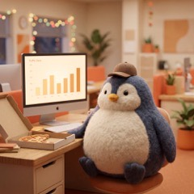
いちばん楽しかったシフトは、野球の大会の日だった
The day of the baseball tournament was the best shift
やりとりする相手は、3種類いる
There are 3 kinds of people I deal with
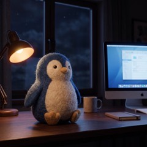
夜は静か。アラームが鳴るまでは
The night is quiet until an alarm goes off
直したら終わり、じゃなかった
Fixing the fault is not the end of it
ベテランでも、手順書を開きながら仕事をしている
Even the veterans work while looking at the manual
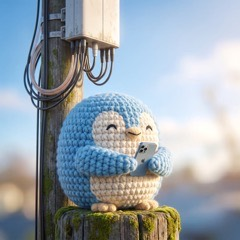
スマホは宇宙と通信していると思っていた
The radio from your phone only reaches the pole nearby
IP電話は上に登らず、横に進む
An IP phone does not have to climb to the top
パソコンの中から、別のパソコンにログインする
I log into about 5 computers in one day
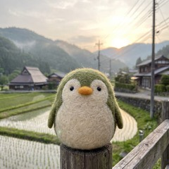
この仕事をして、NTTに感謝するようになった
The countryside has internet thanks to one company
ホームページに障害のお知らせを書くのも、私の仕事
Writing the outage notice on our website is also part of my job
毎月のWindows Updateの日は、ネットワークが逼迫する
The network gets tight on Windows Update day every month
川みたいになった道を歩いて出勤した
I walked to work through a road that had turned into a river
部署が細かく分かれすぎていて、誰に聞くかをまず確認する
The departments are split so finely that I have to check who to ask
机にモニターが3枚、壁にはさらに12枚くらい
I have 3 monitors on my desk and about 12 more on the wall
予備の機械は、誰かが設定を入れるまで動かない
A spare machine does not work until someone puts the config in
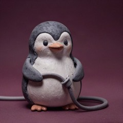
職場ではみんなに「借用とった？」と聞かれる。回線を借りる、という意味
Everyone at work asks if I got the shakuyou, which means borrowing a line
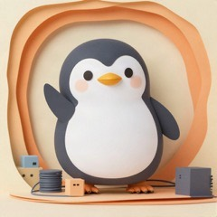
ネットワーク運用保守は、実際に人を現場へ送る仕事でもある
Network operations also means sending a real person out to the site
わからないときは、考える前に過去の記録を検索する
When I do not know something, I search the old records before I think
大企業だと、同じビルが知らない人だらけ
In a big company the same building is full of people I do not know
質問は予約メッセージで、13時と17時半にまとめて送る
I send all my questions at 1pm and 5:30pm using a scheduled message
私のお客さんは企業で、1秒止まるだけで工場が止まることもある
My customers are companies, and 1 second of downtime can stop a factory
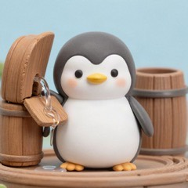
板が1枚ゆるむだけで、樽の水は全部漏れる。研修でそう教わった
One loose plank makes the whole barrel leak, they taught me in training
仕事の資料は、1枚も家に持って帰れない
I cannot take a single page of work material home with me
質問したら本当に障害だった。それでシールをもらった
I got a sticker for asking a question that turned out to be a fault
資料を見ながら、「たぶんネズミがケーブルをかじった」と推理する
We look at the papers and guess that maybe a mouse chewed the cable
保守員さんがレジの下の箱を見つけられるように、地図を描く
I draw a map so the field worker can find the box under the register
電話のネットワークで、私の担当は真ん中だけのこともある
In a phone network my part is sometimes only the middle
正社員の人と同じチームで、同じ役割をしている派遣社員です
I am a temp worker in the same team and the same role as permanent staff
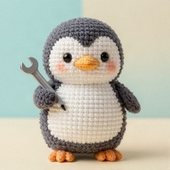
仕事の半分は作業、半分は記録
About half of my job is doing the work and half is recording it
電柱からケーブルが垂れていたら、警察署にファックスを送る
When a cable hangs down from a pole, I fax the police station
障害はたいてい、雷のあとに機械が立ち上がるときに起きる
Faults usually happen when the machines come back up after lightning
大きな障害のあとは、全員が何時何分に何をしたかを書く
After a big fault everyone writes down what they did at what minute
「ダブルチェックお願いします」を、だいたい15分に1回言っている
I say please double check about once every 15 minutes
「ちゅ」の2文字で、かんたんな説明をお願いできるように辞書登録した
I typed 2 letters into my dictionary to ask for a simple explanation
話しながら考えられないので、先にチャットを送る
I cannot talk and think at the same time, so I send a chat first
はじめての大企業は、長い年月で作られたやり方を学ぶ学校みたいだった
My first big company felt like a school, where I learned a way built over many years
正しいパスワードを探すだけで、5分10分が溶けていく
5 or 10 minutes melt away just finding the right password
帰る前に、明日の手順書を開いておく
Before I go home, I open tomorrow's manuals
手順書を覚えるのをやめて、リンクだけ持つことにした
I stopped remembering the manuals, and keep only the links
フィリピンと日本で働いて感じた違いは、人の多さだった
Working in the Philippines and Japan, the difference I felt was how many people there were
💡 AIへの頼み方
「下書きにして」→
「本番に出して」→
本番から下書きに戻す →
「下書きにして」→
python3 tools/draft.py new <slug> で作って push（英日だけ・表紙はあとでいい）「本番に出して」→
python3 tools/draft.py publish <slug> → 表紙の生成・英日韓中の訳・いつもの手順で push本番から下書きに戻す →
python3 tools/draft.py move <slug>